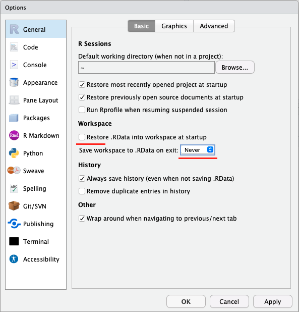
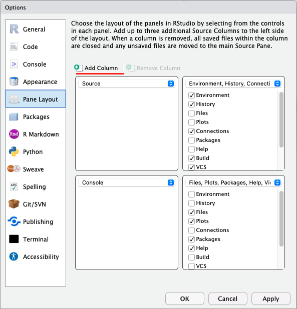
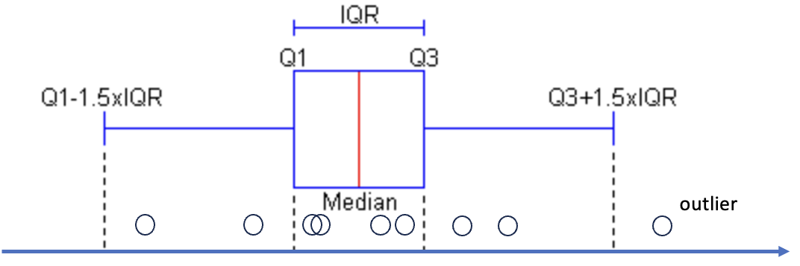
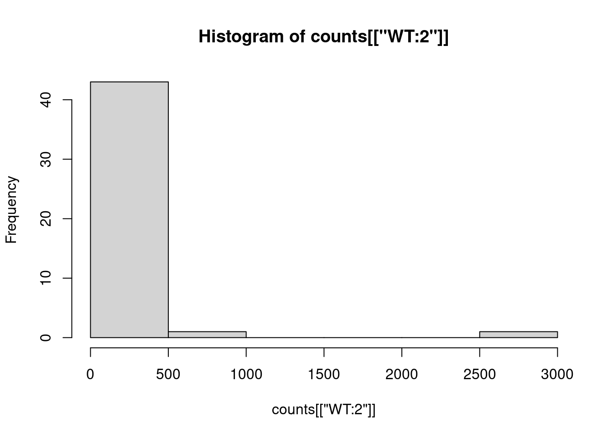
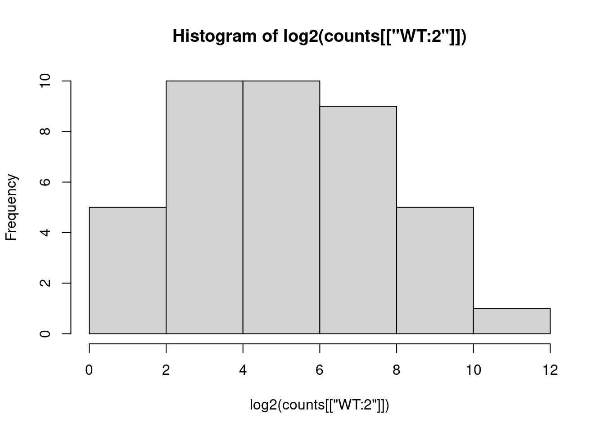

file.exists("relative_path/to/your/file") # replace the path by the yours
file.exists("absolute_path/to/your/file") # replace the path by the yoursWeek 1 - Hands-On Examples
week01
exercise
Some RStudio Settings
Go to Tools -> Global Options…
- Under the General tab:
- Uncheck the box “Restore .RData…”
- Set “Save workspace to .RData on exit” to Never.

- Under the Code tab:
In the Display panel, check the box “Use rainbow parentheses”

- Under the Appearance tab:
You can select a theme for you RStudio, e.g., the “Cobalt” for a dark theme.
- Under the Pane Layout tab:
You can arrange the four panels as you prefer.
In addition, click “Add Column” lets you open an extra “Source” code column, allowing you to view your scripts side by side!

Create an R project
- Create a new project in your folder.
Some rules for naming your project:
- be descriptive and keep it short
- use snake case (only lowercase letters and underscores allowed), avoid special characters (such as
!,#, ) and spaces - the name cannot starts with numbers
- Open your R project, create three new folders, i.e.,
data,scripts,outputs.
Import Dataset
Data Description
We’ll be working with a gene expression dataset as an example, sourced from this link.
The specific file we’ll use is named “read-counts.csv”, which you can download from this zipped folder.
The data comes from an experiment using PCR to study 44 genes. The results were measured to see which genes are active at different stages in Yeast cell cycling. Several strains were tested, including wildtype and some with specific genes knock-downs. Samples were taken at nine time points over two cell cycles (two hours).
Importing into Rstudio
- Download the zipped file to your computer and extract its contents.
- Upload the
read-counts.csvto the folderdataof your R project. - Click on the file to “View” it and identify the column separator.
- Import the file into R and call it “counts”.
Play with Basic R Commands
- What is the absolute file path of the count data? What is its absolute path? Verify your answer using the function
file.exists().
- Check the “Environment” panel or use the function
dim(). What is the dimension of the data frame?
dim(counts)[1] 45 41In the “Environment” panel, click on the tabular icon next to the dataset to visualize the it.
We can extract all gene expressions for the sample named “WT:2” using counts[["WT:2"]].
- Try
mode()on the expression data for “WT:2”, what does it return?
mode(counts[["WT:2"]])[1] "numeric"- Calculate the average expression (
mean()) and standard deviation (sd()) of genes from the sample “WT:2”.
mean(counts[["WT:2"]])[1] 148sd(counts[["WT:2"]])[1] 392.7854- Generate descriptive statistics for all genes from the sample “WT:2” using
summary().
summary(counts[["WT:2"]]) Min. 1st Qu. Median Mean 3rd Qu. Max.
0 6 27 148 110 2527
Stats Time!
What are quartiles?
Quartiles are three values that split sorted data into four equal parts.

IQR (Interquartile range) = Q3 - Q1
IQR only includes the middle 50% of the data.
- Generate a histogram for the “WT:2” sample using
hist(). What does the distribution look like?
Stats Time!
Histograms help us see how data is spread out. They show how many data points fall into different ranges, or bins. By looking at a histogram, we can quickly understand the shape of the data, like if it’s skewed or has outliers. It’s a simple way to get an overview of your data.
hist(counts[["WT:2"]])
hist(log2(counts[["WT:2"]]))
Get Your First Quarto Report
Click the “Render” to generate the report!
- Change something in this script and re-render it, is the report up-to-date?
- Where is your report stored?
- What should you do if you want the report be stored in a specified folder? => use a configuration file for Quarto.
Open a new text file and copy paste following code, save it as _quarto.yml in your project folder.
project:
output-dir: outputs/Try “Render” again, now where is your report?